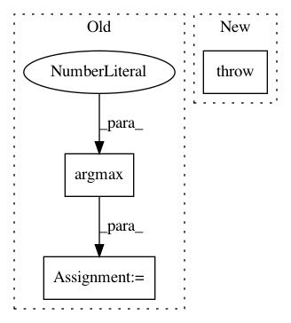

7bdca3ab9d1a73b0211dcf7cb8ed44ba5fab486b,art/classifiers/tensorflow.py,TensorflowV2Classifier,loss_gradient,#TensorflowV2Classifier#Any#Any#,837
Before Change
else:
x_preprocessed_tf = tf.convert_to_tensor(x_preprocessed)
predictions = self._model(x_preprocessed_tf)
loss = self._loss_object(np.argmax(y, axis=1), predictions)
gradients = tf.gradients(loss, x_preprocessed_tf).numpy()
// Apply preprocessing gradients
gradients = self._apply_preprocessing_gradient(x, gradients)
After Change
gradients = tape.gradient(loss, x_preprocessed_tf).numpy()
else:
raise ValueError("Expecting eager execution.")
// Apply preprocessing gradients
gradients = self._apply_preprocessing_gradient(x, gradients)
In pattern: SUPERPATTERN
Frequency: 4
Non-data size: 3
Instances
Project Name: IBM/adversarial-robustness-toolbox
Commit Name: 7bdca3ab9d1a73b0211dcf7cb8ed44ba5fab486b
Time: 2019-07-23
Author: beat.buesser@ie.ibm.com
File Name: art/classifiers/tensorflow.py
Class Name: TensorflowV2Classifier
Method Name: loss_gradient
Project Name: IBM/adversarial-robustness-toolbox
Commit Name: 46b700a1b63488408121f1edf9df3df01d345a17
Time: 2019-02-21
Author: M.N.Tran@ibm.com
File Name: art/classifiers/detector_classifier.py
Class Name: DetectorClassifier
Method Name: loss_gradient
Project Name: IBM/adversarial-robustness-toolbox
Commit Name: 55f64df4561f5f8ebb233d9a5ed8a061fcb47cf2
Time: 2019-04-01
Author: M.N.Tran@ibm.com
File Name: art/attacks/boundary.py
Class Name: Boundary
Method Name: generate
Project Name: IBM/adversarial-robustness-toolbox
Commit Name: e09f411ffe0feee5034f73581054cb2c52e24e1d
Time: 2019-07-18
Author: beat.buesser@ie.ibm.com
File Name: art/classifiers/scikitklearn.py
Class Name: ScikitlearnLogisticRegression
Method Name: class_gradient